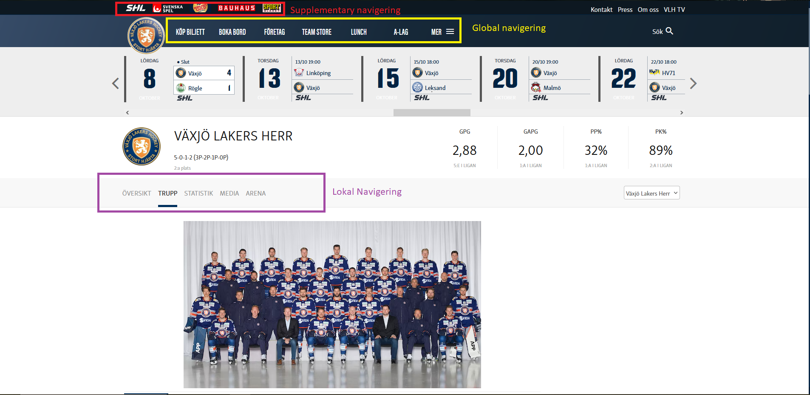

a)
Global navigering innebär den navigeringen som görs mellan webbplatsens olika delar. Global navigering finns alltid tillgänglig på webbsidan oavsett var man är på den.Lokal navigering är den navigering som finns tillgänglig på enskilda sidor eller delar av hemsidan.
b)
Supplementary navigering är när webbsidan länkar vidare till relaterat innehåll till det som finns på webbsidan Tex. en hemsida som handlar om hotell länkar vidare till en webbsida som visar vilka turist attraktioner det finns i närheten av hotellet. Courtesy navigering är information som behöver vara lättilgänglig för användaren av webbsidan då den är viktig att ha när den väl behövs tex. en länk för organisationens mail.
c)
Webbsidan jag har valt är Växjö Lakers Webbsida
Länk till webbsidan 